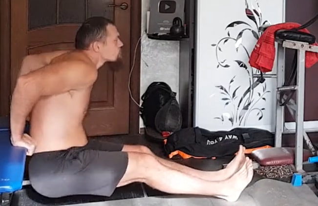
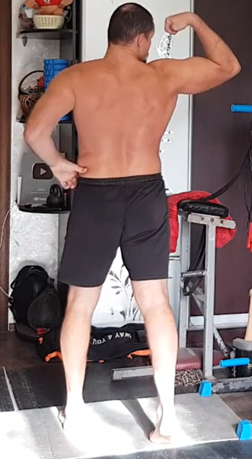
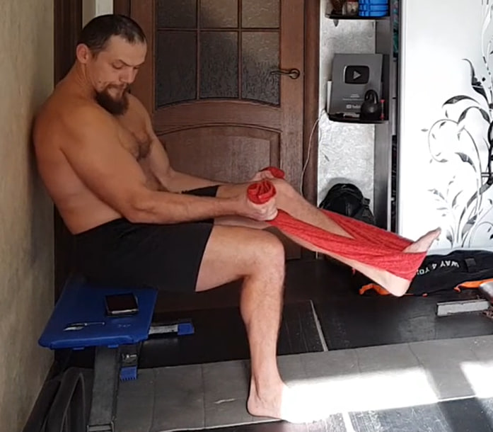

1. Flexiones — 4×10

Colócate en posición de plancha: manos a la anchura de los hombros, cuerpo en línea recta y abdomen firme. Desciende de forma controlada llevando los codos hacia atrás (sin abrirlos demasiado). Baja el pecho hacia el suelo y sube empujando fuerte, terminando arriba sin bloquear completamente los codos.
Ejecución: 4 series de 10 repeticiones.
2. Fondos en banco — 4×10

Apoya las manos en el borde de un banco/silla detrás de ti, con el pecho abierto y los hombros abajo. Desciende flexionando los codos hacia atrás hasta una profundidad cómoda, y luego sube empujando de forma controlada sin bloquear completamente los codos. Mantén el cuerpo estable y el movimiento limpio.
Ejecución: 4 series de 10 repeticiones.
3. Flexiones — 3×10

Misma técnica que en el ejercicio 1: cuerpo en línea recta, codos hacia atrás, baja con control y sube fuerte. Termina arriba sin bloquear completamente los codos.
Ejecución: 3 series de 10 repeticiones.
4. Fondos en banco — 3×10

Misma técnica que en el ejercicio 2: hombros abajo, codos hacia atrás, rango cómodo y subida controlada sin bloquear completamente los codos.
Ejecución: 3 series de 10 repeticiones.
5. Flexiones — 2×10

Repite las flexiones con la misma técnica: plancha firme, descenso controlado y subida potente. Termina arriba sin bloquear completamente los codos.
Ejecución: 2 series de 10 repeticiones.
6. Fondos en banco — 2×10

Repite los fondos con control, sin balanceo del cuerpo. Mantén los hombros abajo y sube sin bloquear completamente los codos.
Ejecución: 2 series de 10 repeticiones.
7. Flexiones — 1×10

Una serie más de flexiones manteniendo la técnica: cuerpo firme, codos hacia atrás, sube sin bloquear completamente los codos.
Ejecución: 1 serie de 10 repeticiones.
8. Fondos en banco — 1×10
Una serie más de fondos, controlando el rango. Sube sin bloquear completamente los codos y mantén la postura estable.
Ejecución: 1 serie de 10 repeticiones.
9. Supinación isométrica de bíceps — 3×10 por brazo (10 s)
De pie y firme. Flexiona el brazo como en una pose de bíceps y gira la muñeca hacia afuera (supinación) para buscar la máxima contracción. Mantén el hombro abajo y el codo controlado (sin encoger el cuello).
En cada repetición, aprieta el bíceps con fuerza durante 10 segundos, sin balancear el cuerpo. Puedes variar un poco el ángulo del brazo para encontrar la mejor contracción.
Ejecución: 3 series de 10 repeticiones por cada brazo (10 s por repetición).
10. Bíceps con toalla/cinturón — 2×10 (10 s)

Siéntate en un banco/silla. Pasa una toalla que no estire (o cinturón/correa) por debajo del pie y sujeta los dos extremos con las manos. Mantén los codos pegados al cuerpo y los hombros abajo.
Intenta hacer un curl tirando hacia arriba con ambas manos mientras el pie y la toalla impiden el movimiento. Busca una contracción máxima en los dos bíceps. En cada repetición aprieta 10 segundos, suelta y vuelve a tensar.
Ejecución: 2 series de 10 repeticiones (10 s por repetición).
11. Supinación isométrica de bíceps — 2×10 por brazo (10 s)

Repite el ejercicio 9 con la misma técnica: supinación para máxima contracción, hombro abajo, sin balanceo. Aprieta 10 segundos en cada repetición.
Ejecución: 2 series de 10 repeticiones por cada brazo (10 s por repetición).
12. Bíceps con toalla/cinturón — 2×10 (10 s)
Repite el ejercicio 10 con la misma técnica: codos pegados al cuerpo, hombros abajo, contracción máxima. En cada repetición aprieta 10 segundos.
Ejecución: 2 series de 10 repeticiones (10 s por repetición).
13. Supinación isométrica de bíceps — 1×10 por brazo (10 s)

Una última serie del ejercicio de supinación: busca máxima contracción y mantén 10 segundos en cada repetición.
Ejecución: 1 serie de 10 repeticiones por cada brazo (10 s por repetición).
14. Bíceps con toalla/cinturón — 1×10 (10 s)

Una última serie del bíceps con toalla/cinturón. Mantén la postura estable y aprieta 10 segundos en cada repetición.
Ejecución: 1 serie de 10 repeticiones (10 s por repetición).
15. Flexiones — 1 serie al máximo

Colócate en posición de plancha y realiza flexiones con técnica limpia: codos hacia atrás, cuerpo firme, sube sin bloquear completamente los codos.
Ejecución: 1 serie al máximo (todas las repeticiones que puedas manteniendo la técnica).